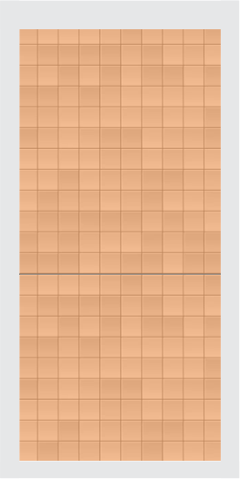
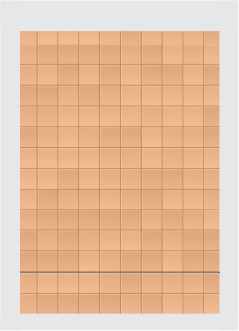
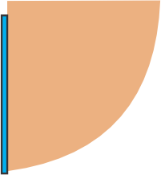
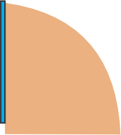
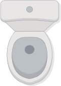

Desafio: tendo duas plantas de cabine sanitária, com profundidades distintas, configure a posição mais adequada para os vasos sanitários e o tipo de abertura das portas.



Abre p/ fora
Abre p/ dentro